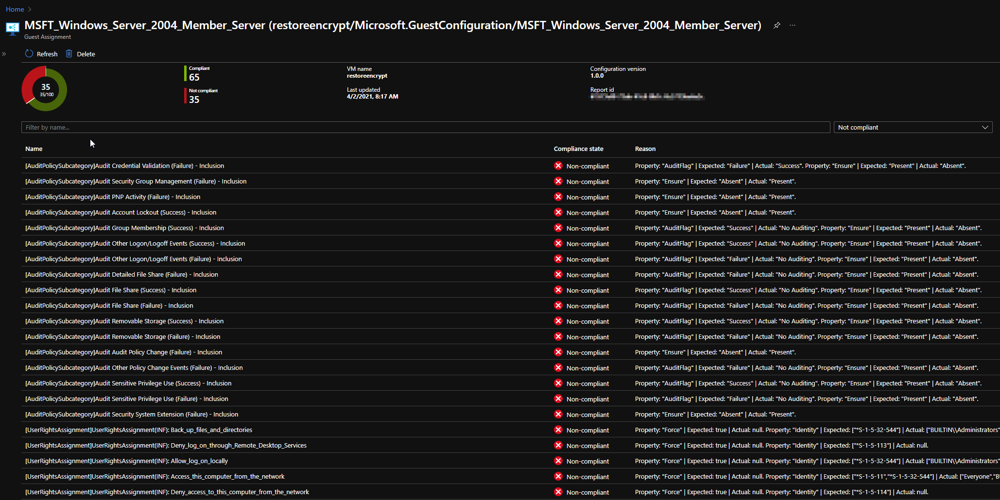

11 minutes
Auditing GPOs with Azure Guest Configuration Policy
OS-hardening security auditing
What?
I wanted to check compliance of a security baseline on Azure without first applying it via DSC. My primary goal was to check out how to validate our own internal security controls without using GPO’s.
Group Policy Objects are frequently used within a windows server domain to push settings, like security controls, and validate/reapply them to prevent configuration drift. My challenge was how to audit these settings, while knowing some customers also use Demilitarized Zones (DMZ’s) in Azure. Servers which reside in this network segment are exposed so they are not joined to the domain. But especially these servers do need to be checked on security controls. So there we have our puzzle. How to audit virtual machines on Azure for custom security configurations.
Security control audit-mechanism
To prevent me from making another overengineered solution based on our own security baseline, I went looking for reference data. Luckily Microsoft offers their Windows Security Baselines in exported GPO’s, so we have some reference data to check for in our VM’s. I’d almost want to say half of the puzzle is done! You can find the GPO’s here link.
But this was far from over! I’ve written a few Pester testcases for other projects to validate files and settings, but I was not sure how to pull the audit data back again to some internal management panel to monitor compliance and drill down to what setting. All the cool stuff is in later Pester releases, so I’d have to update the module on VM’s and still exporting/pulling the audit-data was too much of a hassle in my opinion. We have multiple customers but that’s just too much links in the chain. So Pester was not going to cut it for me.
So I was looking for an integrated security audit mechanism to prevent me writing everything and increasing the chance of stuff breaking randomly. So I checked out Automation Accounts and PowerShell Desired State Configuration, can’t blame a PowerShell user right?, but there was no Audit/Monitor mode without applying the security controls. While I really like having safe environments, I really dislike broken applications due to too strict settings. So even with the ApplyAndMonitor this just would be too invasive to try in live environments. So Azure Automation DSC is off the table too.
Something, something dark
I was a bit bugged and unsatisfied in my search for a solution for this challenge, I tend to find things immediately after stopping the search for said things, and I wanted to know more about DSC. To satisfy the knowledge craving I watched a PowerShell Conference EU 2020 video by Gael Colas and Michael Greene, awesome video bit noisy though. I read the outline, but had to stop half way during the video. Boy I missed some nice stuff. I did however spot Azure Policy Guest Configuration on the outline of the talk.
Later on in my search for a solution to the security baseline challenge, I found a quickstart on Microsoft Docs which showed how to create a DSC configuration and .MOF file (compiled DSC configuration) from an exported GPO, which felt a little bit random, but hey let’s see how far we can get.
I converted a GPO from the Microsoft Security Baseline and received some errors, but it did deliver both the configuration.ps1 and .MOF. The modules referenced on the GitHub page of the module were already installed, so I applied it to a test VM using Azure Automation DSC' ApplyAndMonitor configuration. And it workses! Awesome! In case you’d want to export your own GPO’s you can use Backup-GPO for this.
Later that week I saw a post on Twitter by Thomas Maurer mentioning Azure Policy Guest Configuration, waaait a minute I saw that before! I read the Microsoft Docs page and came to the conclusion, this was my missing link to my solution! This was also the moment I realized I had performed the first steps in the quickstart on the Docs page, but no harm in doing so then!
Azure Policy Guest Configuration
Maybe it’s my English reading profiency, but I just couldn’t really figure out what the quickstart was guiding me through. Eventually I came to the following conclusion: Azure Policy Guest Configuration uses a .MOF-file and modules to validate local settings and report the compliance status to Azure Policy.
- The VM’s require a Managed Identity and a VM extensions, both of which can be deployed via a default initiative.
- The MOF-file and technical prerequisites must be packaged.
- It uses a distinct PowerShell instance and doesn’t interfere with DSC if it’s already utilized on the VM.
The steps to start using Azure Policy Guest Configuration could be summarized to:
- Create a .MOF file with security controls based on the GPO-export using
ConvertFrom-GPO(Baseline Management). - Deploy prerequisites for auditing mechanism
- Make a package with configuration using
New-GuestConfigurationPackage. - (Maybe test configuration on VM using
Test-GuestConfigurationPackage), can also be piped fromNew-GuestConfigurationPackage. - Use
Publish-GuestConfigurationPackageto publish the configuration to a storage container in an Azure Storage Account and produce a sharing link with SAS-token. - Use the link + sas token, displayname, a description, platform specifion and potentially a tag filter, an Azure Policy is created with
New-GuestConfigurationPolicy. - Publish the said policy and apply it to a scope.
The cmdlets are from the PowerShell module GuestConfiguration. Ok,ok, so far so good.
Deployment
We’ve a few choices here, we could use an own GPO with settings to be validated, but to make it interesting I’ve added steps to download all the Windows Security baselines. That way you’d check your hardening for each server OS-version.
1. Creating a MOF-file
If you have an exported GPO then you can skip this part to the codeblock with ConvertFrom-GPO
<#
All the download links found for Windows Security baselines
Download each zip via it's link to the current working directory and replace the whitespace-character %20 in the foldername with a space
#>
@(
"https://download.microsoft.com/download/8/5/C/85C25433-A1B0-4FFA-9429-7E023E7DA8D8/Windows%2010%20Version%201909%20and%20Windows%20Server%20Version%201909%20Security%20Baseline.zip",
"https://download.microsoft.com/download/8/5/C/85C25433-A1B0-4FFA-9429-7E023E7DA8D8/Windows%2010%20Version%201507%20Security%20Baseline.zip",
"https://download.microsoft.com/download/8/5/C/85C25433-A1B0-4FFA-9429-7E023E7DA8D8/Windows%2010%20Version%201607%20and%20Windows%20Server%202016%20Security%20Baseline.zip",
"https://download.microsoft.com/download/8/5/C/85C25433-A1B0-4FFA-9429-7E023E7DA8D8/Windows%2010%20Version%201803%20Security%20Baseline.zip",
"https://download.microsoft.com/download/8/5/C/85C25433-A1B0-4FFA-9429-7E023E7DA8D8/Windows%2010%20Version%201809%20and%20Windows%20Server%202019%20Security%20Baseline.zip",
"https://download.microsoft.com/download/8/5/C/85C25433-A1B0-4FFA-9429-7E023E7DA8D8/Windows%2010%20Version%201903%20and%20Windows%20Server%20Version%201903%20Security%20Baseline%20-%20Sept2019Update.zip",
"https://download.microsoft.com/download/8/5/C/85C25433-A1B0-4FFA-9429-7E023E7DA8D8/Windows%2010%20Version%201909%20and%20Windows%20Server%20Version%201909%20Security%20Baseline.zip",
"https://download.microsoft.com/download/8/5/C/85C25433-A1B0-4FFA-9429-7E023E7DA8D8/Windows%2010%20Version%202004%20and%20Windows%20Server%20Version%202004%20Security%20Baseline.zip"
) | Foreach-Object {
Invoke-Webrequest -URI $_ -OutFile ($_.split("/")[-1].replace('%20',' '))
}
I’m primairly focussed on the Windows 10 Version 2004 and Windows Server Version 2004 Security Baseline.zip so I did:
# Focus on the zip file and unzip the content in the working directory
Get-ChildItem ".\Windows 10 Version 2004 and Windows Server Version 2004 Security Baseline.zip" |
Expand-archive
Inside the unzipped folder another theres another folder, which contains a GPOs folder. That’s what we’re looking for!
Now I was a bit bugged, because I had no idea which folder contains what inside the GPO folder (I don’t speak GUID). Luckily there’s an XML with the correct information.

# Create an XML-variable object
[xml]$xml = Get-Content .\manifest.xml
# Create a new variable using the $xml and output the export ID (GUID) and the corresponding Displayname
$guidtogpo = $xml.Backups.BackupInst | Select-Object @(
@{ n='ID'; e={ $_.ID.'#cdata-section' }}
@{ n='DisplayName'; e={ $_.GPOdisplayname.'#cdata-section' }}
)
Thanks to help from the PowerShell discord I was able to unraffle the above, I was looking in the wrong direction (Select-XML).
Matching GPO-ID to Displayname
Configuration names can only contain alphanumerical characters and underscores, so knowing that I want to use the GPO MSFT Windows Server 2004 - Member Server I replaced the spaces with underscores (for the configurationname) and are going to convert the GPO to a MOF-file.
# Using a regex search replace the spaces and - characters with an underscore
"MSFT Windows Server 2004 - Member Server" -replace '[\s-]', '_'
MSFT_Windows_Server_2004_-_Member_Server
# Convert the GPO and give the configuration the name of the GPO
ConvertFrom-GPO `
-Path '.\{A57A9BF8-C5CC-4CBE-AC7D-A1D0746523FE}\' `
-ConfigName "MSFT_Windows_Server_2004_Member_Server" `
-OutputConfigurationScript
This conversion operation creates an Output folder by default, which contains:
- a configuration .ps1 (this can be used to apply your GPO-settings with Azure Automation DSC !!)
- Managed Object Format (MOF) file (this compiled configuration is used to check the settings)
.MOF-file

Yay we can finally start with setting up our Policy deployment!
2. Deploy prerequisites for auditing mechanism
I assigned the initiative [Preview]: Deploy prerequisites to enable Guest Configuration policies on virtual machines or /providers/Microsoft.Authorization/policySetDefinitions/12794019-7a00-42cf-95c2-882eed337cc8 so the VM’s receive the proper pre-requisites and the long Policy wait has begun.
The initiative contains the following (Policies and Effect Type):
- Add system-assigned managed identity to enable Guest Configuration assignments on virtual machines with no identities, Modify;
- Add system-assigned managed identity to enable Guest Configuration assignments on VMs with a user-assigned identity, Modify;
- Deploy the Windows Guest Configuration extension to enable Guest Configuration assignments on Windows VMs, DeployIfNotExists;
- Deploy the Linux Guest Configuration extension to enable Guest Configuration assignments on Linux VMs,DeployIfNotExists;
After a while the VM’s had a Managed Identity in Azure AD and the proper extension: AzurePolicyforWindows.
3. Make a guest configuration package
This is pretty straight forward, we need to create a package with the .MOF-file we created in step 1 and give our Guest Configuration policy a name. Note that you can’t have spaces in the name of your packages (this kept me busy for a few weeks).
New-GuestConfigurationPackage `
-Name "MSFT_Windows_Server_2004_Member_Server" `
-Configuration .\localhost.mof
This creates a package which has the name as set above and a folder with the contents of the package called unzippedPackage it contains all the prerequisites required to perform the audit if step 2 was performed correctly.

4. Test Configuration Package
This step is not mandatory, but can be nice to test your converted GPO if it contains all the checks you need. I’d mostly use a machine on which you’d want audit anyway. I bound the results of a test to a variable so results can be revisited easily:
$hank = Test-GuestConfigurationPackage `
-Path '.\MSFT_Windows_Server_2004_Member_Server.zip'
$hank
The outputted results arent’t what’s so nice, the value is in the $hank.resources.
When you check-out that one with out-gridview, it gives a nice example what the end-result will look like.
Out-Gridview
Results from Out-Gridview $hank.resources

This shows that we can succesfully audit the settings with the .MOF on one machine manually! But I’m lazy and want to make Azure Policy do the heavy lifting for me.
5. Publish the configuration package to a storage container and produce a sharing link
This step initially was a bit confusing in the documentation. In the Microsoft Docs it states:
Publish-GuestConfigurationPackage `
-Path ./AuditBitlocker.zip `
-ResourceGroupName myResourceGroupName `
-StorageAccountName myStorageAccountName
Filling in my information I received errors which stated:
- The specified container does not exist.
I wasn’t sure which container it couldn’t find. One look in the .psm1 file and I found that the storageaccount container by default is named guestcontainer. Later I thought why bother looking there if Get-Help also would suffice, doh!
I went the easy way out and just created a storage container named guestcontainer, but you can name it anyway you want,Publish-GuestConfigurationPackage has an argument -StorageContainerName. This allows you to be creative and give an own name to your storage container.
Publish-GuestConfigurationPackage `
-Path '.\MSFT Windows Server 2004 - Member Server.zip' `
-ResourceGroupName christian-rsg `
-StorageAccountName <name of my storageaccount> `
-StorageContainerName guestconfiguration
This returns a sharing link with SAS-token, keep it close you’ll need it later!
6. Create an Azure Policy
We’re going to use the link + sas token, a displayname, a description, platform specifion and potentially a tag filter, and create an Azure Policy with New-GuestConfigurationPolicy.
$NewGuestConfigurationPolicySplat = @{
ContentUri = '<fill in your sharing link>'
DisplayName = 'MSFT Windows Server 2004 - Member Server'
Description = 'Validation os-hardening baseline configuration for Windows Server (2004) Domain Members'
Path = './policyDefinitions'
Platform = "Windows"
}
New-GuestConfigurationPolicy @NewGuestConfigurationPolicySplat
This creates a JSON-file (AuditIfNotExists.json) in the Path supplied in the splat. The contents of the file is the long awaited Azure Policy template!
AuditIfNotExists.json

You can also immediately publish the Azure Policy, by doing New-GuestConfigurationPolicy @NewGuestConfigurationPolicySplat
But we didn’t do that so we have to Publish the policy the policy by hand.
Publish-GuestConfigurationPolicy -Path '.\policyDefinitions'
I received the output below and saw it in the Azure Policy blade, awesome!!
Policy
This command stores the policy definition in the current PowerShell-scope (subscription, with azcontext), you could also publish the policy definition to a different scope/policy-store (maybe a Management Group).
Policy Assignment
The custom policy is available in the store, we assign the policy to a specific resource-scope, where can differentiate in assignment names (to specify scopes) and input our parameters. In this case we can chose to audit Azure Arc machines, but this is currently not relevant for our purpose.
It took a while for all VM’s to be processed, it stated for a long time:
Reason for non-compliance No related resources match the effect details in the policy definition.
So a nice bowl of spaghetti later, and the details pane of the VM showed a new item:
- Last evaluated resource (out of 1) with a clickable resource-id.
This gives the nice overview over all VM’s with a drilldown on settings, this is exactly what I needed and what I’d expect from an integrated tool to assess compliance of each setting. I really like it, it ticks all the boxes for the said challenge.
Policy Compliance

VM Compliance details overview

VM Compliance
Conclusion and next steps
By converting the GPO’s to .MOF, packaging them and applying them to audit OS-settings, we’ve a method to check our OS-hardening using DSC and Azure Policy. Using this feature of Azure Policy you can check compliance and drill down on specific settings, or test your security baseline vs. a reference without applying it directly. The examples used were the Microsoft Windows Security Baselines, but you could as well use something internal or something like the CIS GPO’s. Next steps are automating deployment to customers with tag filtering and creating a build pipeline when a new security policy is designed!